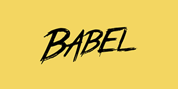

Bootstrap相关优质项目推荐
这些项目或者是对Bootstrap进行了有益的补充，或者是基于Bootstrap开发的

优站精选
Bootstrap 网站实例
Bootstrap 优站精选频道收集了众多基于 Bootstrap 构建、设计精美的、有创意的网站。

Webpack
是前端资源模块化管理和打包工具
Webpack 是当下最热门的前端资源模块化管理和打包工具。它可以将许多松散的模块按照依赖和规则打包成符合生产环境部署的前端资源。

React
用于构建用户界面的 JavaScript 框架
React 起源于 Facebook 的内部项目，是一个用于构建用户界面的 JavaScript 库。

TypeScript
中文手册
TypeScript 是由微软开源的编程语言。它是 JavaScript 的一个超集，而且本质上向这个语言添加了可选的静态类型和基于类的面向对象编程。

jQuery API
中文手册
根据最新的 jQuery 1.11.x 和 2.1.x 版本翻译的 jQuery API 中文文档/手册

Next.js
中文文档
Next.js 是一个轻量级的 React 服务端渲染应用框架。

Babel
Babel
是一个 JavaScript 编译器
Babel 是一个 JavaScript 编译器。Babel 通过语法转换器支持最新版本的 JavaScript 语法。

Node.js
中文文档 / 手册
Node.js 是一个基于 Chrome V8 引擎的 JavaScript 运行环境。Node.js 使用了一个事件驱动、非阻塞式 I/O 的模型，使其轻量又高效。